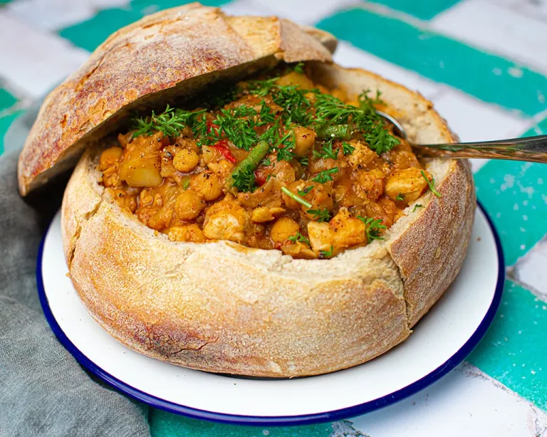

Bunny Chow

Bunny Chow is a South African street food consisting of a hollowed-out loaf of bread filled with spicy curry.
Cooking Instructions
- Prepare a meat or vegetable curry.
- Hollow out a loaf of bread.
- Fill the loaf with curry and serve with the bread center.
Ingredients
- Loaf of bread
- Curry (meat or veggie)
- Spices
- Onions, tomatoes, garlic
Tutorial Video
Origin Map